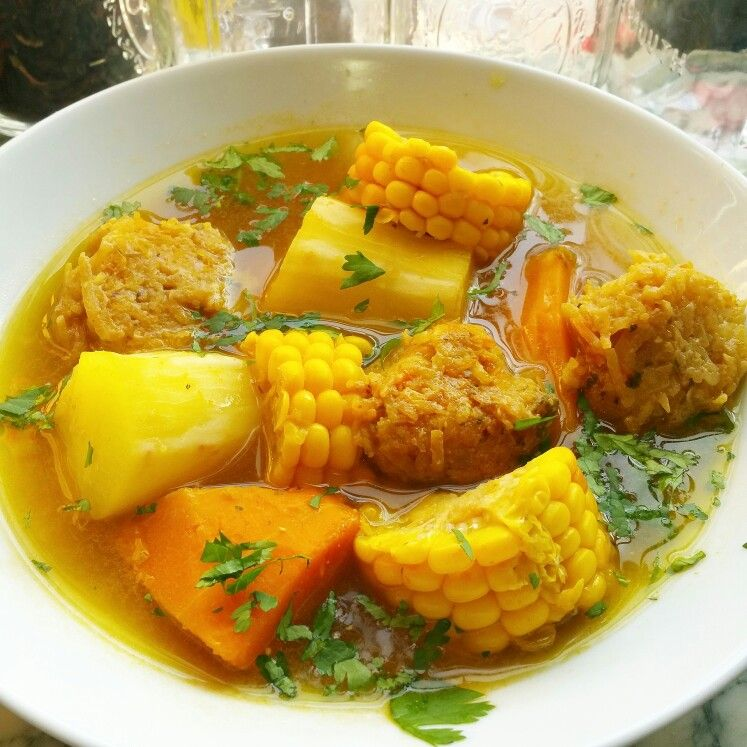

Sancocho
- 1 pound of beef, cubed
- 1/2 yellow onion, chopped
- 1/2 green pepper, chopped
- 2 cups carrots, chopped
- 4 tomatoes
- 2 garlic cloves
- 4 plantains
- 1 sweet potato
- 2 russet potatoes
- 1 cup celery, chopped
- 1/4 cup of cilantro
- 1 quart of beef stock
- 2 tablespoons olive oil
In a large saucepan, over low-to-medium heat, combine beef, olive oil, garlic, and onions.
Stir until beef is brown on all sides and onions begin to caramelize.
Mix green pepper, celery, carrots, potatoes, and 1 quart of beef stock. Bring to a boil and simmer for 30 minutes or so, then cook on high until until stock is reduced by half.
Add all of the remaining vegetables. Continue to cook until meat is tender and the vegetables are soft. You might need to add a bit more water to thin, although it should be thick.